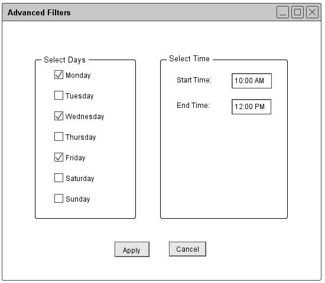
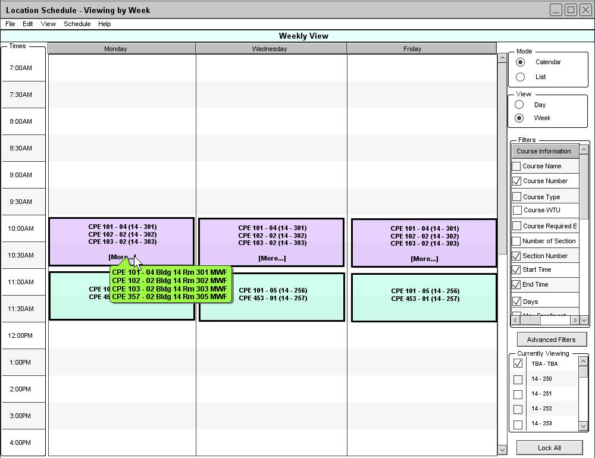

Figure 88: Advacned Filters
When the user clicks Advanced Filter button from a view window, the Schedule Tool displays the Advanced Filter dialog as shown in figure 88. The information in the dialog is automatically filled in with the current filter settings, which is currently set to default. The Select Days specifies what days to be displayed in a weekly view. According to the figure, the Scheduler Tool displays a schedule view starting from 7:00AM till 10:00PM for both daily and weekly views.
Figure 89 is an example of a different advanced filter setting. According to figure 89, the Scheduler Tool displays Monday, Wednesday, and Friday in a weekly view starting from 10:00AM till 12:00PM for both daily and weekly views.

Figure 89: Different Advacned Filters
If the user is currently viewing the weekly location schedule in the calendar mode (figure 80), when click Apply in the Advanced Filters dialog, the Scheduler Tool re-generates a schedule view with the new advanced filter settings from figure 89. Figure 90 is the result window after applying the new advanced filter settings to the weekly location schedule.

Figure 90: Weekly Location Schedule View with New Advacned Filters